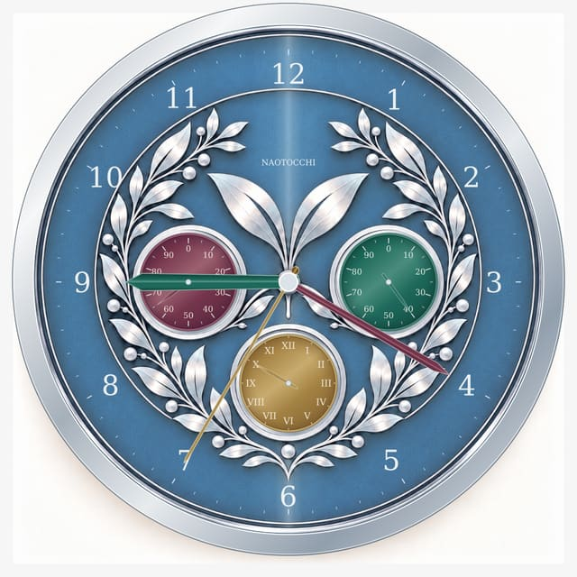

NAOTOCCHI · VERSION 12 · LIGHT VIEW
画像を1枚ずつ表示します。下の項目と案を選んで比較できます。

V9 B基準。＋30%は未採用で、10と銀装飾の余白は未解決です。
この軽量画像だけを開く
全案は比較用です。「10」の余白は未解決。スタンドは実物未製作・安定性未検証。保存画像は代替フォントによる描画で、iPhoneのGeorgia実字形とは異なる場合があります。